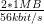
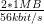

March 5, 2012
Fernuniversität Hagen
Faculty of mathematics and computer science
Contents
1 Introduction
Although computers became ubiquitous for some time now, they still don’t help their
users with their most basic information management needs: Make contacts, calendars,
notices and to do items available across different devices and share them with family and
peers.
Existing solutions are either based on non-free software (Microsoft Outlook), brittle and
unreliable
or require the user to trust his personal data to the commercial interests of a multinational
corporation.
TODO Überleitung
A section about OpenSocial (subsubsection 1.2.3) provides additional motivation for
a restful API for social data. It also uses the opportunity to provide an alternative
approach to explain the rest architecture by going into detail why OpenSocial is not
restful.
A few patterns or techniques are presented and proposed for reuse in other Rest applications to
ease the support for multiple alternative Media types. Among these techniques are Dependency
Injection to prepare resource method parameters (Listing 4.4.3.3), Resource Facades
(subsubsection 4.4.2), a programmable dispatcher (subsubsection 4.4.1).
1.1 Definitions
Kolab is the name of a software product ... TODO
A couple of related terms and concepts exist that all more or less overlap with the functionality
provided by Kolab: Groupware, Personal Information Management/Manager (PIM), Group
Information Management (GIM), Computer-supported cooperative/collaborative work, Knowledge
management, (Enterprise) Content Management.
TODO: keinen der Terme benutzen.
1.2 Related work
1.2.1 WebDAV, CalDAV, CardDAV
The most widely implemented Groupware protocols (in free software) today
seem to be CalDAV[DDD07] for calendaring and CardDAV[Dab11] for
contacts .
Both protocols extend WebDAV[Dus07] and thus inherit its characteristics.
Two characteristics of WebDAV motivate an investigation of alternative approaches. The first
is the protocol’s complexity that complicates correct implementation. Unfortunately complexity is
hard to assess. Therefor only some indications are provided at this point.
Lisa Dusseault, author of a WebDAV book[Dus04] and the standard itself
wrote :
Were I to propose CalDAV today it would probably be CalAtom.
The three standard WebDAV (127p), CalDAV (107p) and CardDAV (48p) add up to 282 pages of highly
specific standards. This is nearly double as much text as necessary for the design described in this work
(149 pages) .
In contrast to WebDAV, Feeds and related technologies are also widely used so that a web
developer might already know the latter standards.
The second and for this work more important characteristic of WebDAV is, that it is not restful, as explained
by Roy Fielding:
PROP* methods conflict with REST because they prevent important resources
from having URIs and effectively double the number of methods for no good
reason. Both Henrik and I argued against those methods at the time. It really
doesn’t matter how uniform they are because they break other aspects of the
overall model, leading to further complications in versioning (WebDAV versioning
is hopelessly complicated), access control (WebDAV ACLs are completely wrong
for HTTP), and just about every other extension to WebDAV that has been
proposed.
[…]
The problem with MOVE is that it is actually an operation on two independent
namespaces (the source collection and destination collection). The user must
have permission to remove from the source collection and add to the destination
collection, which can be a bit of a problem if they are in different authentication
realms. COPY has a similar problem, but at least in that case only one namespace
is modified. I don’t think either of them map very well to HTTP.
|
Despite the comprehensiveness of CalDAV and CardDAV, the calconnect
consortium additionally develops two alternative protocols, CalWS-SOAP and
CalWS-REST .
1.2.2 IMAP used by Kolab
The Kolab Groupware Server is special in that it uses the Internet Message Access Protocol
(IMAP) as a synchronization protocol for all its data and thus the IMAP server as a
database.
There are a few appealing advantages to this approach:
- The IMAP infrastructure used for mail can be reused.
- Data is stored as file attachment. Thus the problematic mapping of groupware data
items to relational schemes can be avoided.
- IMAP supports offline work and later synchronization.
The simplicity of just dropping files in a store however also has drawbacks, e.g: there’s no
moderating logic on the server site that could verify the correctness of stored data and there are no
query capabilities.
IMAP in general also comes with its own challenges:
- The standard documents describing and extending IMAP are many .
- IMAP imposes a folder structure and does not permit alternative structures like tags
as used by Google’s gmail.
- Sam Varshavchik, author of the Courier Mail Transfer Agent, argues that IMAP
standard documents are “contradictory” and that implementations define their own
understanding of what IMAP is .
1.2.3 OpenSocial
Roy Fielding wrote a blog post about the “SocialSite REST API”, stating that it isn’t restful at all but clearly
an RPC style API.
Fielding was referring to SocialSite, which is however an implementation of the OpenSocial specification.
Dave Johnson, a contributor to SocialSite, reacted on this critique by opening a discussion on an OpenSocial
mailing list:
I must admit, it is not clear to me how OpenSocial REST API violates the six
rules that Roy stated.
The above quote warrants a short comment. I also thought before, that REST would be so simple that
there wouldn’t be much need for further studying. Every web developer has some understanding
of URIs, HTTP and a bit less of Hypermedia. So it is easy to fall into the trap that
everything build on top of HTTP would be restful. Now however, after some more reading
about REST, I can easily find violations of the REST constraints in the OpenSocial
specification.
Restful APIs are modeled around resources, their representations and links between them. The
authors of the OpenSocial API however seem to have modeled their API around the concept of
services:[Ope11, Social API Server, sec 2, Services]
OpenSocial defines several services for providing access to a container’s data.
1.2.3.1 Fielding’s critique Fielding listed some rules that a restful API must obey, but did not
give explicit examples how OpenSocial violates this rules. The following section will provide such
examples.
A REST API should not be dependent on any single communication protocol,
[…] any protocol element that uses a URI for identification must allow any URI
scheme to be used for the sake of that identification. [Failure here implies that
identification is not separated from interaction.]
OpenSocial defines a construct called “REST-URI-Fragment” which is a clear violation of the
above rule. This URI fragment is simply an encoding of procedural parameters as elements of an
HTTP URI:[Ope11, Core API Server, sec 2.1.1.2.2, REST-URI-Fragment]
Each service type defines an associated partial URI format. The base URI for each
service is found in the URI element associated with the service in the discovery
document. Each service type accepts parameters via the URL path. Definitions
are of the form:
{a}/{b}/{c}
URIs can contain a query component that would be more appropriate to contain parameters.
This would also have made it clearer to see that the specification actually defines services instead
of resources. One test showing the misfit is to ask how dot-segments (’.’ and ’..’) inside the URI
fragment are interpreted and whether this conforms with the letter and spirit of the URI
standard.[BLFM05, sec 3.3] Another misfit can be seen in the URI fragment to retrieve one or
multiple albums. In this case the ’c’ part in the quoted definition above is actually a list of albums
to retrieve separated by a slash.
Fielding’s second bullet point most likely refers to the X-HTTP-Method-Override header. This header is
a widely used
workaround to allow the use of other HTTP methods than GET and POST from HTML forms or
through firewalls.
The next two points again refer to a more serious issue:
A REST API should spend almost all of its descriptive effort in defining the
media type(s) used for representing resources and driving application state[…].
[Failure here implies that out-of-band information is driving interaction instead
of hypertext.] A REST API must not define fixed resource names or hierarchies[…]
[Failure here implies that clients are assuming a resource structure due to out-of
band information[…]].
The OpenSocial specification contains a lot of out-of-band information describing how to form
URIs to access information or which methods to use on which URIs for different actions. This
means that the OpenSocial API is not simple or intuitive to use but requires a client developer to
read a lot of specification, thus violating the simplicity property of a restful architecture. Since the
URIs are fixed in the specification and necessarily also in clients, the modifiability property is also
violated.[Fie00, sec 2.3]
The following tables give some examples of the specified URIs:
URI fragment | Method | Description |
/people/{User-Id}/@self | GET | profile for User-Id |
/people/{User-Id}/@self | DELETE | remove User |
/people/{User-Id}/{Group-Id} | GET | full profiles of group members |
| POST | Create relationship, target specified
by <entry><id> in body |
| POST | Update Person |
/people/{Initial-User-Id}/
{Group-Id}/{Related-User-Id} | GET | ??? |
/people/@supportedFields | GET | list of supported person profile fields |
/groups/{User-Id}[/{Group-Id}] | GET | one or all groups of a user |
| PUT | update group |
| DELETE | delete group |
/groups/{User-Id} | POST | create group |
| |
Table 1: URI fragments for peoples and groups in the OpenSocial REST API
URI fragment | Method | Description |
/albums/{User-Id}/@self | POST | create album |
/albums/{User-Id}/{Group-Id}[/Album-Id]* | GET | one or multiple albums |
/mediaItems/{User-Id}/{Group-Id}/{Album-Id}/
{MediaItem-Id} | GET | one mediaitem |
/mediaItem/{User-Id}/@self/{Album-Id} (sic!) | POST | create mediaitem |
| |
Table 2: URI fragments for albums and mediaitems in the OpenSocial REST API
The last URI in Table 2 is obviously missing an “s” behind mediaItem. This typo is
present and unfixed in the OpenSocial spec since Version 1.0, released in march 2010.
This is of course not a big issue in itself, but rather a sign that the specification is too
verbose and does over-specify things that should rather be auto-discovered through
hyperlinks.
Fielding mentions in a comment to the same blog post that the OpenSocial API “could be
made so [restful] with some relatively small changes” but does not specify these changes. However
some issues can easily be identified.
First the data structures defined in OpenSocial do not use URIs to refer to other
resources. Instead they use Object-Ids that must then be inserted in the appropriate
URI templates. Examples are the recipients, senderId, collectionIds of messages
and the ownerId of albums. The person structure does not contain fields referencing
other resources. Thus it does not obviously violate REST like the albums and messages.
However it does so even worse since there are hidden references only defined out-of-band
in the specification. One can retrieve the albums, relations or messages of a user by
filling in the userId in one of the specified URI templates. If Users would just contain
references to other resources related to a user, the specification could already be shortened a
lot.
Another missed opportunity for a much more intuitive API is the relation of media items and
albums. This seems to be poster child example for a collection (album) to collection-element
(media item) relation which could have made use of the hierarchical character of URI paths.
OpenSocial however requires the client developer to use two different URI templates.
(Table 2)
A not so small change to OpenSocial would be to either use already standardized and
registered media types where possible or to register new types where necessary. It seems that there
are some already existing media types that could be a good fit for OpenSocial but only miss a
canonical json representation for easy consumption by javascript applications. These are vCard for
persons,
ATOM entries[NS05] for messages, activities and media items and ATOM categories, collections or
workspaces[Gh07] for albums and groups. It would probably be necessary to add extensions to the
mentioned media types but vCard and ATOM both already anticipated this need and provided
mechanisms to do so.
The use of the ATOM format could promote the adoption of OpenSocial because developers
could either reuse existing knowledge about ATOM or would be more motivated to learn about
a system that is based on an already widespread format. In fact OpenSocial already
mentions ATOM as a way to wrap OpenSocial data. However this wrapping does not build
extend and reuse ATOM semantics as proposed above but just puts the OpenSocial data
structures inside the entry/content element of ATOM. This kind of misuse of ATOM
does of course not deliver any advantage on top of the existing plain JSON or XML
representations.
Consequently the newest OpenSocial specification deprecates any reference to the ATOM
format.
In Jan Algermissen’s “Classification of HTTP-based
APIs” ,
the OpenSocial REST API would actually be “HTTP-based Type I” due to the lack
of media types and direct hyper links between related resources. Algermissen writes
that this level has the lowest possible initial cost of all HTTP APIs. Or in other words:
The OpenSocial specification authors might not have had to invest a lot to come up
with this API specification but maintenance and evolution cost may be medium or
high.
1.2.4 Others
The Calendar Access Protocol (CAP)[RBM05] was published in December 2005 about one year before
CalDAV and CalAtom. The standard comprises 131 pages. No evidence of any successful implementation
could be found .
Cyrus Daboo, author of some calendaring standards, attributes the failure of CAP to its
complexity .
CalAtom and CardAtom build on top of the Atom Publishing Protocol and are therefor
discussed in subsubsection 4.3.3.
2 Requirements
2.1 Scope
This work defines a protocol to share
2.2 General Requirements
- Lesen/Schreiben der verwalteten Resourcen: Kontakte, Kalender-Events, Todos,
Journal-Einträge, Free-Busy, …
- Synchronisation von Collections für Offline-Nutzung
- einfach zu implementieren (vgl. CalDAV, CardDAV, IMAP) → ReST
- Standardkonform → xCard, xCal, ATOM
- nutzbar durch JavaScript: JSON basierte Medientypen
- Groupware Elemente: Kontakte, Kalender-Events, Todos, Journal-Einträge, Free-Busy
2.2.0.1 Replacement for CardDAV The web application should provide at least the same
features as the CardDAV protocol. It should be demonstrated that a restful application can serve
for the same purpose and thus that the additional complexity of WebDAV and CardDAV is not
necessary.
The standard lists the supposed main features of CardDAV[Dab11, sec. 1]:
- Ability to use multiple address books with hierarchical layout.
- Ability to control access to individual address books and address entries as per
WebDAV Access Control List (ACL) [RFC3744].
- Principal collections can be used to enumerate and query other users on the system as
per WebDAV ACL [RFC3744].
- Server-side searching of address data, avoiding the need for clients to download an
entire address book in order to do a quick address ’expansion’ operation.
- Well-defined internationalization support through WebDAV’s use of XML.
- Use of vCards [RFC2426] for well-defined address schema to enhance client
interoperability.
- Many limited clients (e.g., mobile devices) contain an HTTP stack that makes
implementing WebDAV much easier than other protocols.
There are some minor features of CardDAV, that are mainly inherited from WebDAV and whose
general usefulness outside of the scope of a content management system could be argued. See
subsection 2.8 for a discussion of those.
2.2.0.2 Restful The application should obey the constraints of a rest application as specified in
[Fie00].
TODO: 4 Grundconstraints von REST auflisten.
The above constraints are not an end in itself but lead to the following required or desirable
properties:
- Cacheability (5.1.4) can keep the data available also in offline mode, improves
performance and scalability.
- Simplicity helps to develop glue code to connect the application to other systems or to
extend it.
- Modifiability allows to adapt the Groupware to changes in the organization.
- Reliability should not need additional justification.
- Administrative scalability means that intermediary components can be deployed
independent of the administrator of the main application.
Other outcomes described by Fielding that may not be of importance for the present work are:
scalability in terms of users, network performance and efficiency.
2.3 User Classes and Characteristics
Different kinds of clients should be able to use the API. Table 3 lists clients whose
constraints and characteristics must be respected in the design. The choice of clients and
their characteristics is intentionally conservative to cover a wide range of real world use
cases.
| | Memory | Bandwidth | preferred format | comment |
|
|
|
|
|
| Web Browser (HTML5) | 5 MB | 56 kbit/s | JSON | workplace, internet cafe |
| Mobile Device | 512 MB | 384 kbit/s | any/XML | Smart Phone, Tabled |
| Desktop application | 1 GB | 10 Mbit/s | any/XML | PIM suite |
| Server application | 4 GB | 100 Mbit/s | any/XML/HTML | intranet application |
| |
Table 3: Constraints of different API clients
The most problematic client in the list is the web browser with only 5MB of storage capacity (via
WebStorage )
a potentially very bad internet connection, the inability to leave data for later sessions (internet
cafe) and the restriction to one particular format (JSON). However this use case is of importance
as the OpenSocial ( 1.2.3) case shows. It is also the primary use case to justify an API that
provides multiple Media Types since it mandates JSON while the canonical Media Types (xCard,
xCal) support XML.
2.4 Data Characteristics
Lacking sources for more accurate numbers, a couple of conservative estimates are made for the
size and number of resources in the scope of this work. This guesswork is not perfect. But it
provides a rationale behind later design decisions (subsection 4.3) and outlines their applicability
for a concrete use case.
Contacts It is believed that humans have regular social contacts to around 150
people .
So the number of contacts in a users address book collection should at least handle 1500
contacts.
The average textual data size associated to a contact is expected to be around 840
bytes .
100 kb are enough for an image file to identify a face.
So a collection with a data size of 1500contacts* 840 ≈ 1MB should be a usable address
book without profile pictures for many users.
Events A very busy person may have 10 events per day. A two years calendar thus
contains 2 * 365 * 10 = 730 events. The core data of an event is estimated to comprise 356
bytes . So
a useful calendar collection has a data size of 730events * 356
≈ 1MB should be a usable address
book without profile pictures for many users.
Events A very busy person may have 10 events per day. A two years calendar thus
contains 2 * 365 * 10 = 730 events. The core data of an event is estimated to comprise 356
bytes . So
a useful calendar collection has a data size of 730events * 356 ≈ 0.25MB
Conclusions The size of full, useful collections of personal information items has the same order
of magnitude then the size of a digital image taken with today’s smart phones. With the worst case
bandwidth from Table 3 the download of a full uncompressed collection lasts around
 ≈ 5min .
Even with a drastic data compression of 90% the transfer would still last over 30 seconds. With the
next better bandwidth of the mobile device however the transfer duration for the uncompressed
case is already under one minute (≈ 42sec).
For all described clients the client’s storage is large enough to contain at least a few
collections.
≈ 0.25MB
Conclusions The size of full, useful collections of personal information items has the same order
of magnitude then the size of a digital image taken with today’s smart phones. With the worst case
bandwidth from Table 3 the download of a full uncompressed collection lasts around
 ≈ 5min .
Even with a drastic data compression of 90% the transfer would still last over 30 seconds. With the
next better bandwidth of the mobile device however the transfer duration for the uncompressed
case is already under one minute (≈ 42sec).
For all described clients the client’s storage is large enough to contain at least a few
collections.
2.5 Operation Environment
The application is expected to be installed in a Java servlet container like Tomcat or Jetty and to
contact a separate storage component. The primarily targeted storage component is an IMAP
server with a Kolab conform set of groupware folders. However the design should not restrict
the extension to a document database like CouchDB, plain files, relational or XML
databases.
2.6 Design and Implementation Constraints
2.7 Specific Requirements
2.7.0.3 Nested and mixed collections The design should not unnecessarily hinder that
collections could be nested or contain different kinds of media types, e.g. calendar items and
contacts.
[Dab11, sec. 5.2] forbids nested and mixed collections to ease the implementation of clients.
However both may make sense in certain scenarios and the protocol should not exclude such
scenarios. A collection could for example represent all items related to a project, which include
contacts, events, todos and notes.
2.8 Excluded requirements
2.8.0.4 Search It is not required that the server implements any means to search its data. It is
not excluded that such a facility could be added later. It is however expected that searching could
be implemented separately. This could be done either on a synchronizing client or as a separate
system in the same administrative domain as the server.
2.8.0.5 Performance optimization The system is meant to inherit the benefits of a restful
architecture. It should therefor be possible to attach separate caching intermediaries for read
requests. Rather then concentrating on the performance of the implementation of read requests it
should be taken care that the architecture supports external caching and thus avoids to serve the
same read request multiple times.
2.8.0.6 Access Control The aspect of access control would broaden the scope of this work to
wide. However it could be kept in mind, whether the proposed design could be enhanced by a
separate access control design as proposed in [GZLW11].
2.8.0.7 Copying and Moving WebDAV introduces the HTTP verbs to COPY and MOVE. The
usefulness of such functionality must of course be compared to the complexity of the
implementation and the drawback of incompatibility to plain HTTP.
It is possible to enhance a restful API with copy and move functionality without extending
HTTP. The only requirement is that additional hyperlinks can be attached to the resources of the
API. Allamaraju [All10, Ch. 11] proposes “controller resources” that act on POST requests and
are linked from the resources they act on. Custom link relations are used to indicate the semantic
of the controller resource.
This work does not include initial support for copy or move.
2.8.0.8 Versioning WebDAV and therefor CalDAV and CardDAV support the versioning of
resources as an extension to the HTTP protocol. Versioning is an important feature for a text
authoring system that may have been the main target for the WebDAV protocol. It does however
seem to be of little use for the resources considered here. The resources are mostly created in one
session by one user and seldom modified.
2.8.0.9 Make Collections WebDAV introduces the MKCOL HTTP verb to create collections.
CardDAV recommends that implementations support this to allow users to “organize their data
better”. An alternative would be to make use of ATOM categories for grouping. Instead of creating
a new (empty) collection the user would thus create a contact resource with a new category. An
ATOM service document could then link to a new (virtual) collection that only contains and
accepts resources of this category.
TODO: What are the proposed ways to create collections? Post a feed to the service
document? Put a new service document? Put a feed document to the desired location?
2.8.0.10 Locking As with Versioning, this is feature of WebDAV is not considered. Instead of
locking a resource HTTP supports conditional updates and leaves conflict resolution to the
client.
[NL99, sec. 1] provides three questions to help deciding whether a protocol should support
locking and which in the present case advise against locking: The content is mergeable in contrast
to binary data like images. The editing is expected to be localized to isolated points in the document,
e.g. changing just one field in a content or event. And the content can be edited while the user is
offline.
2.8.0.11 Push notifications This work does not include any means to actively
notify (push) a client about changes happening on the server. The client needs to
initiate a request (pull) to the server to look for changes. However separate solutions
exist
to enable a push workflow on top of a feed based application.[WM09] It
may therefor not be seen as a disadvantage to omit push notifications as a
requirement.
3 Media Types
To some extent, people get REST wrong because I failed to include enough detail
on media type design within my dissertation. – Roy T. Fielding
from: Rest APIs must be hypertext driven
[PZL08, sec. 7.2] identifies the support of different media types as an issue that ”can
complicate and hinder the interoperability” and ”requires more maintenance effort”.
[DM11] proposes a XML based REST framework that uses XForms, XQuery, XProc, XSLT
and an XML database. It can benefit from the constraint that it only supports XML based media
types. It is to be seen, which ideas from this work could be reused in the case of a broader variety
of supported media types.
3.1 Syntax vs. Semantic (Vocabulary)
The usage of standardized media types is one key difference between an API and a
restful API[Fie00, sec. 5.2.1.2]. Only if the client has knowledge about the media
type can it do something meaningful with it besides just receiving it. In that sense,
the often used mime types application/xml or application/json are not really media
types. They don’t tell the browser or user anything meaningful beside the syntax of the
data.
To do anything meaningful with plain json or xml, the client programmer must normally look
up the meaning or semantic of the data in the API documentation. The data therefor fails the
self-descriptive constraint of REST.
Compare this with a mime type like application/atom+xml. It specifies the syntax (xml) and
the semantic (atom) of the data. Of course somebody once needed to read the atom
specification and program the client with the knowledge of how to process this media
type. The purpose of standardized media types however is that their number is limited
enough so that there is a fair chance that a client might have implemented a given media
type.
Large sites like Google, Facebook or Twitter have the market power to attract developers to
read their specifications and program clients accordingly. They thus don’t necessary need to rely on
standardized media types. REST however envisions a decentralized web in which parties can
interact without previous knowledge of each other. This becomes possible through the usage of well
known predefined media types.
3.2 Data Models of Media Types
TODO:
- Ein generelles Daten Modell wäre hilfreich, um alle Medien Typen darauf zu projezieren
und mit einer solchen Projektion dann innerhalb der Applikation zu arbeiten (TODO
Schreier: warum muss dass Datenmodell total allgemeingültig sein, reicht es nicht
vielleicht auch für eine Domäne?)
- Ein allgemeines Datenmodell könnte auch eine Hilfe sein als Zwischenschritt für
Conversions zwischen Medientypen
- Es gibt kein allgemeines, sinnvolles Datenmodell für alle Medientypen
- Trotzdem können bestimmte hilfreiche Generalisierungen vorgenommen werden
- Die meisten Resourcen haben bestimmte generische Metadaten die entweder im
Medientyp kodiert werden können oder mit dem Medientyp zusammen persistiert
werden müssen
- Diese Metadaten finden sich auch in atom:entry wieder und sind: Autor, Updated,
Titel, Summary, etag, id, name, links
- Transitional Links vs Structural Links:
http://java.net/projects/jax-rs-spec/pages/Hypermedia
- Different categories of data: CSV, binary/plain text, large binary (video), tree
(XML/JSON) (Referenz?)
3.2.1 XML vs. JSON
This section investigates the two most common syntaxes used by media types and the issues that
arise if an application needs to support both of them.
The application section of the IANA mime type registration has 294 entries ending in “+xml” and only 3
ending in “+json”.
This stands in contrast to the rise of public JSON APIs and the decline of XML
APIs.
A strong argument for JSON as the preferred format for public APIs may
be that JSON is a subset of JavaScript and thus easily consumable in a web
browser.
A drawback of this mismatch between the preference of media type designers and
API consumers is a possible duplication of work and incompatibilities across different
APIs. An author that wants to offer a public API as JSON is likely to find only an
existing XML media type, but no one in JSON. The situation would be eased, if a
standard mapping from XML schemes to JSON would be possible, but that is not the
case.
Instead, possible mappings have to trade of the preservation of all structural information
against the “friendliness” of the resulting JSON structure.[BGM+11] Without going into detail, a
JSON structure can be seen as friendly if it makes best use of JSON’s data types, is compact and
easy to process. Listing 1 shows two different examples how to map data from XML to JSON with
one of them using JSON number values, being more compact and probably easier to
process.
Listing 1: XML fragment <lang pref=”1” id=”fr” / > <lang pref=”3” id=”en” / >
|
: unfriendly JSON ”languages”: [ { ”id”:”fr”, ”pref”:”1” }, { ”id”:”en”, ”pref”:”3” } ]
|
: friendly JSON ”languages”: { ”fr”:1, ”en”:3 }
|
Activity Streams has avoided the misalignment of an official XML format and an
unofficial JSON deviate by defining an XML (ATOM) and JSON format from the
beginning.
3.2.2 Hypermedia Support in JSON
TODO: discuss HAL
3.3 vCard, iCalendar, xCard and xCal
TODO:
- Textbasierte vs. XML Formate
Version 3 of vCard was published in 1998[HSD98] only a few months after the W3C
published Version 1.0 of XML[PSMB98] and eight years before JSON became an official
standard.[Cro06]
3.3.1 Hypermedia Support
The iCalendar standard defines a several properties that can link to external representations of
the properties value by specifying an “Alternate Text Representation” parameter. These are
comment, summary, description, contact, location, resources. The properties attendee and
organizer can have a “Directory Entry Reference” parameter that should contain an URI to a
person resource. One property that can not be dereferenced is “Related To”: It only contains the
globally unique identifier of another calendar component.
One problem that arises with the use of hyperlinks in personal information management is
identification across administrative boundaries. Take for example an event that gets sent from one
organization to another and contains hyperlinks to person representations. These hyperlinks most
likely point to an internal addressbook of the organization and may not be accessible by the
receiver of the event information. The receiver however may have his own addressbook containing
information about the person.
3.4 Derived JSON formats for PIM data
TODO Übereinstimmungen und Unterschiede vCard, portable contacts: Which fields of portable
contacts are derived from vCard: http://wiki.portablecontacts.net/w/page/17776141/schema
Calendar Formate nur kurz
3.5 Microformats, Microdata, RDFa
HTML documents are primarily meant to be rendered by browsers and interpreted by humans. It
is hard for a computer to interpret the meaning of text and data included in an HTML document.
Microformats, Microdata and RDFa define ways to add additional meta data to HTML that
allows computers to identify structured data in HTML without having an impact on the
rendering.[Ten12]
There is not yet an established term to refer to the three different formats. Practitioners use “structured
data languages” ,
“machine-readable data format”[Hic11a], “structured data
markup”
or just “structured markup”. Scientific publications seem to use the term “Semantic
annotation”[RGJ05] to refer to HTML with machine readable semantic data. This work will use
the term “Semantic annotation format” to refer to Microformats, Microdata, RDFa and similar
formats.
3.5.1 Use Cases
One major use case for semantic annotations is to help search engines to better index
the annotated site. The Microformats project was started by a blog search engine
(Technorati)
and the recent schema.org effort came from the three big search engines Google,
Bing and Yahoo. Another use case is demonstrated by the Firefox plugin
“Operator”.
It allows to extract annotated entities from web pages. A user could thus import contact or
event data from arbitrary web pages in his personal information manager with one
click. Semantic annotations can also be used to make web content accessible to disabled
people.[YSHG07]
In the context of this work, Semantic annotations could be used inside the summary tag of
Atom entries. A consumer of a feed of contact elements could thus use the data extracted from the
annotated summary data to provide a tabular overview of the entries even without fetching the
associated media resource of the entry.
TODO example
A third use case is currently under development as part of the European
Union Research Project “Interactive Knowledge Stack” (IKS) that builds a
semantic content management stack. The sub-project “Vienna IKS Editables”
(VIE)
uses semantic annotations to make content on a web site editable. In a traditional content
management system, content is editable via HTML forms that are available as separate sites in
addition to the normal view. The VIE Javascript library instead searches the HTML document for
semantically annotated entities and dynamically builds editing interfaces for those. A modified entity
can then be sent to the server via AJAX in a format called “json-ld” that serializes semantic data to
JSON.
3.5.2 Format selection
With at least three different formats, a developer needs to settle on one to
implement.
A first consideration has to be the ability of expected consumers to handle the format, a second
consideration the available tooling to produce a particular format. The different Semantic
annotation formats impose certain requirements for the used HTML dialect. Microformats can be
used with all versions of HTML, RDFa with XHTML or HTML5 and Microdata introduces special
attributes that work only with HTML5.[Ten12]
Microdata is part of HTML5 and a standard effort of the
W3C.[Hic11a] It is also backed up by the schema.org effort of Google and
Microsoft.
The schema.org vocabulary in turn has been mapped to the semantic world by researchers working on
linked data.
Thus by using Microdata with the schema.org vocabulary, the data can easily be combined
with other semantic data. The rest of this work therefor concentrates on Microdata.
Many good arguments to also consider RDFa can be found in the blog of Manu
Sporny ,
chair of the RDF Web Applications Working Group at the World Wide Web Consortium.
3.5.3 Producing Semantically annotated HTML
A recent discussion of possibilities to produce semantically annotated HTML pages can be found in
[CDDM09, sec. 9.1.3]. The authors “discern two different ways in which the Semantic Web plays a
key role in current Web engineering approaches: one is by the creation of Web applications starting
from semantically described data, and the second is by the generation of semantic annotations
from the Web engineering process.”
In the case of this work only the second way is of interest, since we don’t assume the data to be
persisted in a semantic model and aim to generate semantic annotations. As an example for this
way the book describes a method developed as part of a larger “Web Semantics Design Method”
(WSDM). This method consists of two mappings. The first one is the “data source mapping
(DSM), which describes exactly how the reference ontology maps to the actual data
source.” The second mapping uses XPointer expressions to link HTML tags to elements of
the reference ontology from the first mapping. Neither the book nor referenced papers
however go in any more detail about the final step of generating the annotated HTML
tags.
One important point can be learned from the WSDM description. The production of semantically
annotated HTML can become a lot easier if the entity is already available represented with the
targeted vocabulary. A very naive approach to produce annotated HTML would be to just
manually write the necessary attributes in the template and fill them with values from an arbitrary
data object, as demonstrated in listing 2. Even with the conciseness of the used template language
Jade ,
the developer still has a lot to type.
-@ var vcard: VCard
div( itemscope itemtype=”http://schema.org/Person”
itemid=#{vcard.getProperty(”uid”)} )
span( itemprop=”name” )
#{vcard.getProperty(”fn”)}
span( itemprop=”telephone” )
#{vcard.getProperty(”tel”)}
Listing 2: Defining all Microdata attributes manually in an HTML template
Compared to the above listing 3 shows a template using a data structure that is aware of the
used Microdata vocabulary and wraps an instance of a typed Microdata item with its properties.
The scope method of the Microdata interface will add the itemscope, itemtype and
itemid attributes to the nested div element. The prop method either augments a nested
element as shown for the name property or creates the correct nested element. The
method adds the itemprop attribute and puts the value for this property inside the
element.
-@ var md: MicroData
= md.scope
div
= md.prop(”name”)
span( style=”color:red” )
= md.prop(”telephone”)
= md.prop(”email”)
Listing 3: Using a Microdata-aware data structure in a template
An implementation of this approach must take care of a few peculiarities.[Hic11a] Some
properties don’t necessarily use simple span elements, e.g. dates can be better expressed with time
elements or URI values most likely appear in an a,img,link or object element. Property values
could also be put in a content attribute while the element’s nested text content is optimized for
human consumption. Items can be nested, e.g. an item of type PostalAddress could be nested
inside a Person item.
A template engine that should be extended as described above should allow to capture and
manipulate nested HTML elements and to call methods of passed in objects.
3.6 HTML Forms
TODO
3.7 Media Types for Collections
Vergleich ATOM mit Medientyp Collection+JSON
JSON formats for collections: Collection+JSON Mime-Type (approved in July 2011) by Mike
Amundsen
JSON ATOM serialization implemented by Apache
Abdera
Some problems in loss-less conversion of ATOM to json:[Sne08]
- JSON has no equivalent for the xml:lang attribute.
- Dereferencable IRIs must be transformed to URIs.
- URIs relative to an xml:base attribute must be resolved, also inside XHTML content
elements.
- Repeatable elements must be converted to arrays.
- The ATOM date format (RFC 3339) differs from the JavaScript Date serialization.
- ATOM content elements are versatile but should be represented more meaningful in
JSON then just a plain String.
- ATOM supports arbitrary extensions via namespaces.
3.8 Media Type conversion
Konvertieren zwischen verschiedenen Representationen die nach aussen gegeben werden vs.
Konvertieren zwischen äußerer Representation und Representation für die Datenbank.
An welchen Punkten in der Architektur muss/kann/soll konvertiert werden?
3.9 Updates with non isomorphic Media Types
How to handle updates, if the mediatypes are not isomorph?
How does Google handle PATCH in the calendar API?
Schnittmenge der Medientypen identifizieren
Einen kanonischen Medientypen festlegen für Updates?
Erweiterungsmöglichkeiten v. Medientypen nutzen um Isomorphie herzustellen
4 Design
4.1 Overview
4.2 Reusable Patterns and Components
Reuse is of course in general a good thing. In the context of Model Driven Development (MDD)
and code generation it is especially import to identify code that is general enough to be provided
by a library of framework and does not need to be generated.
Minimizing the generated code also minimizes the extend of drawbacks associated with code
generation, most importantly conflicts between updates by the code generator and manual
modification.
Concerns regarding Media Types that needs to be implemented differently for each different
Media Type:
- validate the Media Type
- provide accessors to read, write parts of the Media Type
- serialize, deserialize the whole Media Type
- converters to other formats
- accessors to common interfaces (projection), e.g. common generic resource attributes
or common attributes of a contact
Candidate areas for re-usability:
- link building, URL parsing
- HTML form building, parsing
- generic properties of resources, id
- resource types
- question to storage: does resource still match ETag? Has changed since?
- all links of a resource: Link: intern/extern/undefined, href, rel, title, text, media type
- bool function matchesMediaType(), getMediaType() auf WrappedEntry
- Prüfung, ob ein Update durchgeführt werden soll, gemäß ETAG, ifnotchanged
- Möglichkeit, DatenKlassen mit DatenTypen zu definieren wie in eZ Publish um
automatische Views und Edit Ansichten zu ermöglichen.
- Creation of resources: POST to collection with SLUG Header, PUT to URI,
normalization of SLUG Header
- Pagination (building and parsing of next and previous URIs, implementation of
RFC5005), querying the collections entries provider with the correct parameters (offset,
limit).
- Storage interface with transaction support. An application may for example need to
notify an indexing component after some resource has been changed. – No transaction
support: Every action that must happen in a transaction together with the resource
change must be handled by the storage layer, must be aware of the storage technologie.
4.3 Interactions
4.3.1 Discovery of Collections
An ideal Rest API is accessed by one main URI and all other resources can be discovered by
following links. A useful Media type to discover available collections is the Atom Service
Document.[Gh07, sec. 8] It contains links to collections organized in workspaces and annotated
with meta data.
A Groupware client most likely needs to discern the available collections by the contained
resources as to consume and present them with the appropriate user interfaces for contacts,
calendar data, etc. A first idea could be to use the Media types declared in the “accept” tag of a
collection to identify types of collections. However the specification explicitly states that this tag
“specifies a type of representation that can be POSTed to a Collection”. If a collection
can only be read then no accept tag should be present and thus also not available for
interpretation.
<atom:category scheme=”http://schemas.google.com/g/2005#kind”
term=”http://schemas.google.com/g/2005#contact” />
<atom:category scheme=”http://ibm.com/oa/type”
term=”task” />
<atom:category scheme=”http://www.w3.org/2005/Atom/Entry-Kind”
term=”http://schemas.google.com/g/2005#contact”
label=”Contact” />
<atom:category scheme=”http://www.w3.org/2005/Atom/Entry-Kind”
term=”http://ibm.com/oa/type#task”
label=”Task” />
Listing 4: ATOM categories as used by Google and IBM to mark entry types and a proposal
to use a standard scheme URI for type terms
A standard conform approach is demonstrated by Google’s Data
Protocol and by an
internal project at IBM .
Both use atom categories[Gh07, sec. 8.3.6] to mark the type of atom entries. James Snell proposed
a standard URI to identify the semantic of categories but no follow up to this could be found.
The use of categories to attach arbitrary meaning, e.g “event type (product or promotion), and its
status (new, updated, or cancelled)” to feeds and entries is also recommended in [Web10, p.
200].
To make categories usable for a common Groupware API, the server needs to use a categorization
scheme understood by the client. If different clients don’t agree on one scheme the server could still support
several.
An alternative Media Type to Service Documents in JSON could not be found. The most
promising approach seems to list available collections in a application/vnd.collection+json
representation. (subsection 3.7)
4.3.2 personalized Service Documents
For a Groupware that manages confidential information it would make sense to provide personalized
Service Documents for authenticated users that list only collections that the user is authorized to
read.
Personalized Service Documents for different users should have different URIs to make them
cacheable and to acknowledge that each personalized Service Document is indeed an
individual entity. This however conflicts with the previous goal of using one unique
Service Document URI as entrance to the API. A solution would be to require the user to
authenticate when requesting the unique entrance URI and to answer with a HTTP code
“307 Temporary Redirect” to the user’s personalized Service Document after successful
authentication.
4.3.3 Atom Publishing Protocol
The idea to not only use Service Documents but the complete Atom Publishing
Protocol as the foundation for a Groupware API is not novel. Rob Yates
described this idea under the titles “CalAtom” and “CardAtom” already in
2006 .
The CalAtom[Yat07] proposal uses a “features” tag and associated IANA registry to mark
collection types and their features. But the examples of category usage above (subsubsection 4.3.1)
and the availability of OpenSearch for time range searches (subsubsection 4.3.7) provide
confidence that a new tag is not required. The features tag was proposed in 2007 by [Sne07] but
did not become a standard.
The Atom format is also used by the Google Data Protocol to publish contacts, events and other
data types .
Google’s use of Atom however is a bit special. The resource data is not included in the content tag of an
entry. Instead a new namespace is used to put the data with additional tags directly inside the entry
tag .
4.3.4 Synchronizing Collections
If a Groupware client can synchronize an entire collection to its local memory, then there is no
need for more sophisticated queries that provide only a subset of the collection. The client can
answer all queries from its local copy of the collection.
In subsection 2.4 it has been shown that the time necessary to synchronize a full
collection is under one minute in most cases. This should be acceptable for an initial
synchronization that is only done once on rare occasions when a desktop machine or mobile device
is first used. If subsequent synchronizations only transfer a few resources, that have
changed since the last synchronization then such updates can be made in the order of a
second.
All client scenarios except of a Web Browser client that is used only once, can profit from the
above scenario. In such a case other interaction patterns need to be used (subsubsection 4.3.7).
The Atom Publishing Protocol identifies collections of resources as Atom Feeds. Feeds can also
be used to synchronize collections. The necessary ingredients are the link relation “next”[Not07],
the concept of a “deleted entry”[Sne12] and the prerequisite that the feed entries must “be ordered
by their ”app:edited” property, with the most recently edited Entries coming first in the document
order”[Gh07, sec. 10].
The API server design has the notion of a logical feed that can be split up in multiple real
Atom feeds linked with the relation “next”. Updated or new entries are always inserted as first
element of the first feed since their “app:edited” property is the most recent. Inserting a new entry
at the top of a feed can lead to entries at the end of the feed being pushed to the subsequent feed.
This push needs to be atomic such that a client loading subsequent feeds may see an entry twice,
at the end of a previous feed and the top of the next feed, but will never miss an entry in this
scenario.
In the case of an initial synchronization, the client loads the initial feed and all subsequent
feeds linked with the “next” relation and adds all Resources associated with the feeds entries to its
local storage. Resources can either be included completely in the content tag of an entry or be
linked to by the entry. The client memorizes the “app:edited” value of the first entry of the first
feed for subsequent synchronizations.
It is possible, that the collection has been modified during the synchronization. Therefor the
client should directly conclude with an update synchronization. This means that the client
starts again to load the first feed and applies all updates until it sees an entry with an
“app:edited” value older then the one memorized from the last synchronization. It is possible
that the client must follow several “next” links or even load all feeds in the extreme
case.
If the client followed a “next” link during a synchronization then it will make sure at the end
of the synchronization that the first feed has not changed meanwhile most probably with a
conditional GET request. After this last request indicates no further changes the client knows that
its local collection is in the state of the servers location at the time of the last GET
request.
4.3.5 Media Entries and the content tag
The Atom format provides the opportunity to include a full representation of a resource in the
content tag of an entry.[NS05, sec. 4.1.3] It is thus possible to embed complete xCard or xCal
resources in the Atom feed and so to relieve the client from issuing many GET requests for each
individual resource.
The benefit of saved GET requests must be balanced with the possible disadvantage of serving
the client resource representations already seen. A client that does regular updates may probably
be interested only in the first one or two entries of a feed while the server might have made the
effort to produce tens of entries.
On the other hand the Atom Format mandates that an entry without embedded content must
provide a summary element. It may not make much of a difference in bandwidth and processing
whether a summary is produced or the full content is provided.
Different optimization strategies are possible here, e.g.
- The first feed in a sequence of paged feeds could contain only very few entries to
optimize for regular updates and have more entries in all following feeds.
- The server could remember the entries already consumed by an authenticated client
and serve only new entries in the first feed.
In any case it is mandatory that a client can handle embedded content as well as linked
content.
4.3.6 Modifying Resources
Editing, Updating and Deleting of media entries is specified in the Atom Publishing Protocol and
is useful for this work without modifications or additions. Two aspects however are worth to be
highlighted.
As outlined in subsubsection 4.3.5 it is possible to include full representations of the
collection resources in the content tag of an entry. A client however is not allowed to use
an embedded resource representation as the base for an update.[Gh07, sec. 10] If the
client has not yet retrieved the resource from its own URI it thus “ SHOULD perform
a GET on the URI of the Member Entry before editing it.”[Ibid.] This limitation is
consequent since the Atom feed does not contain an ETag for an embedded resource. A
client thus can not make a conditional PUT request only from the information in the
feed.
The second aspect concerns offline editing. A client should offer the user the possibility to
create, update and delete resources while being offline and to apply this modifications during the
next synchronization, much like the IMAP protocol used by Kolab. This requirement is trivial to
fulfill as long as no concurrent edits happen on the server site. In that case the client needs to
perform an automated or user assisted merge of the conflicting resources. The client should always
preserve a copy of a resource version as last seen from the Server to be able to perform a
three-way-merge.
The problem of offline edits and conflicts is thus similar to the case of a failed conditional
PUT request due to a concurrent edit. [NL99] describes this case and resolutions in
detail.
4.3.7 Special Reports, Queries, Search
In few cases it may not be feasible for a client to synchronize a full collection, e.g. due to low
bandwidth. This section explores restful ways to let the client request only a subset (selection) of a
collection. More specifically the client should be informed about possible query facilities without
relying on out-of-band information.
A promising approach is to use the de-facto standard OpenSearch[Cli]. According to its
homepage it is implemented by most major browsers, search engines and many other sites.
OpenSearch is also recommended for the link type “search” in the HTML5 standard[Hic11b,
sec. 4.12.4.12]. The default format of an OpenSearch result list is an Atom (or RSS)
feed.
OpenSearch defines the (not yet IANA registered) media type application/opensearchdescription+xml,
which provides necessary information for a client to perform queries against a search service. Since possible
search queries are usually unlimited it is not possible anymore to provide a set of static links. Instead
the server provides an “URI Template”[GFH+12] that instructs the client how to perform an “URI
construction” .
The basic OpenSearch standard defines a simple full text search. Thus a user could search
contacts by name, address or any other field value. Equally events, todo items or notes could be
searched by keywords.
The next important use case is to show calendar events in a given interval, e.g. to present the
events for a month, week or day. This can be achieved with the OpenSearch Time extension that
provides the temporal start and end parameters. Rob Yates CalAtom[Yat07] proposal included a
similar time range search as the only but mandatory special report.
Probably useful might be the OpenSocial Geo extension. It could allow to search contacts or events
in a given geographic region. Even more search types become possible with the SRU extension that
wraps the “Search/Retrieval via URL” standard with its “Contextual Query Language”
(CQL) .
The latter provides the possibility to sort result sets which might be interesting to present an
address book sorted by names.
Search result Atom feeds can make use of annotated HTML (subsection 3.5) in the summaries
of entries and should not embed full resources in the content tag. Thus the client can still provide a
structured view of the data, like calendar views or a tabular contacts list without the need to
transfer full representations.
The OpenSearch specification suggests that links to the OpenSearch Description Document for
an Atom feed might be added inside a feed tag. There is however no reason not to add such a link
inside the collection tag of a Service Document. This allows a client to directly search a collection
without the need to get the feed first.
4.4 Components
4.4.1 Dispatcher
The dispatcher selects the Java method (see 4.4.3.1) that should handle the request. The selection
can depend at least on the path component of the requested URI, the media types
accepted by the client as indicated in the request’s ACCEPT header and the HTTP
verb.
Every project implementing JAX-RS[HS09] needs to have some kind of dispatcher component.
The specification itself does not identify this component. It does however specify the algorithm a
dispatcher needs to follow and a set of Java annotations which must be used to configure the
dispatch. These annotations (PATH, GET for the HTTP verb and Produces) are demonstrated in
listing 5.
@Path(”atm/{cardId}”)
public class AtmResource {
‘
@GET
@Path(”balance”)
@Produces(”text/plain”)
public String balance(@PathParam(”cardId”) String card,
@QueryParam(”pin”) String pin) {
return Double.toString(getBalance(card, pin));
}
Listing 5: Example of a JAX-RS annotated Resource class (by Marek Potociar)
Alternative approaches to configure the dispatcher are not designated by JAX-RS. One
possible alternative would be to expose an API to manually add dispatch routes at runtime and
remove the corresponding annotations from the source code.
This approach is indeed implemented e.g. by
Restlet ,
Apache Wink
and probably others. Jersey 2.0 is also expected to provide an API for the
dispatcher. :
Advantages of a dynamic dispatcher configuration would be:
- The path under which a resource type is served is decoupled from the code defining the
behavior of the resource. This could enable the reuse of resource classes or methods in
other contexts.
- The decision which media types can be consumed or produced may not depend solely
on the resource class or method. A resource method may work on a domain specific
data type and the set of supported media types may depend on the available converter
between media types and the data type. A photo album for example resource may be
able to consume any number of different image formats that a separate component can
convert to an internal image representation.
- The list of supported media types could be created programmatically. This enables
reuse of set of equivalent media types or combination of media type categories for
example to combine the sets of image, video and audio media types.
- The concept of resource classes could be replaced altogether. The life cycle of a resource
class in JAX-RS defaults to the request scope. During one request only one resource
method is called. Resource methods therefor by default don’t share state through
resource class attributes. It would therefor be possible to bind individual functors to
dispatcher routes and thus composing the equivalent of a resource class at runtime.
TODO:
The dispatching as defined in JAX-RS does not define any facility for a resource method to
decline its possibility to handle a method at runtime. Such a facility could either be
implemented by a boolean precondition method associated with the resource method or by a
special Exception type that would restart the request dispatch but this time ignoring the
method that threw the exception. If no alternative request method could be found, the
Exception would be propagated and subsequently transformed into an appropriate error
response.
Thus it would be possible to define generic and special purpose request methods
even for cases where the static JAX-RS dispatch algorithm does not provide sufficient
granularity.
While all this flexibility can provide many advantages it has to be kept in mind how the
framework can gather enough knowledge to still help by autogenerating e.g. WADL documents and
responses to HEAD and OPTION requests.
4.4.2 Resource Facades
Fielding discerns between a resource and the representation of a resource in a certain format,
“selected dynamically based on the capabilities or desires of the recipient and the nature of the
resource”.[Fie00, p. 87] According to this notion, the media type used to represent a resource
should not influence the processing logic. In an ideal case all possible media types should be
handled by the same resource method.
This ideal contrasts with JAX-RS concepts where the media type can be one parameter of the
dispatcher logic. This section outlines a pattern tentatively named “Resource Facades” that should
make it easier to handle different media types with the same code and thus to facilitate code
reuse.
A resource method should contain the programming logic executed to serve a request of a
specific type (e.g. GET, PUT) against a specific resource. The programming logic could execute
common tasks like the following:
- validate the correctness of a submitted resource
- check the clients authorization
- persist the submitted resource data
- trigger notifications containing a summary of the resource
- submit the submitted resource to an indexing system
- check the submitted resource to be of a certain accepted domain type, like contact,
event, todo item or any set of such types
All the above processing tasks should in theory be independent of the media type of a resource
and only be programmed once to work on any resource format. This could be made possible by
applying the concept of roles to resources. Roles have been described already 15 years ago by
[Fow97] or a bit later by [BRSW00]. However no evidence could be found whether roles have been
used to implement restful systems.
According to [Ste08], there exists several definitions for roles which mostly share a few core
properties:
This includes the property that a single object can play several roles of different
or the same kind both simultaneously and sequentially, and that the same role
can be played by different objects of the same and different kinds. Raised to the
type level, this means that the relationship between role types and class types
(as sources of role players) is generally m:n.
A popular example for roles is a person, that can have the different roles over their lifetime
(student, professor, single, husband, widower) or in different contexts (teacher, father, husband,
customer, politician).
Exemplified with the above tasks, a resource can have the role of being validated,
persisted, summarized or checked for being of a certain type. So like in the above quote a
facility is needed that can provide m different roles of resources that come in n different
shapes.
It can be noted, that unlike in the previous example with roles of a person, this resource roles
examples do not extend the original resource with new attributes. A person surely gets additional
attributes as a father (references to children) or professor (member of faculty). Thus the term
“facade” in favor of role should indicate that only different views of the same data are
provided.
Listing 6 shows interfaces of a minimal framework to provide Facades for Resources. The idea
is, that any code that needs information from a Resource requests the appropriate Facade from the
ResourceHandler. The ResourceHandler was instantiated with a FacadeRegistry from which it can
request Factories for requested Facades. A ResourceHandler must have been instantiated with at
least one initial input Facade, e.g. an InputStream.
interface FacadeFactory<T> {
T build(ResourceHandler resourceHandler);
/**
* Dependency Facades needed by this factory.
*/
Iterable<? extends Class<?>> getDependencies();
}
interface FacadeRegistry {
/**
* Returns Facade factories that could probably
* build the requested Facade.
*
* @param mediaType MediaType of the original Resource
* @param clazz requested Facade interface
*/
Iterable<FacadeFactory<?>> getFacadeFactories(MediaType mediaType,
Class<?> clazz);
}
interface ResourceHandler {
/**
* Returns the unique instance of a Facade for this Resource
*
* Subsequent calls with the same parameter receive the
* _same_ unique Facade instance!
*
* @param clazz requested Facade interface
* @return Facade implementation instance
*/
<T> T getFacade(Class<T> clazz);
/**
* Is the requested Facade interface available for this Resource?
*
* @param clazz Facade interface
*/
boolean hasFacade(Class<?> clazz);
/**
* The MediaType of the original Resource from which this
* ResourceHandler was instantiated.
*/
MediaType getMediaType();
}
Listing 6: API of the ResourceFacades component
Figure 2 presents two example use cases for Facades. On the left site the request method
might want to know the full name of a submitted contact resource. It therefor requests a Person
facade. Different Person Facade factories are registered. The different factories in turn have each a
dependency on an InputStream parameterized with a Media Type. The provided Media Type
makes the resolution path unambiguous.
The right site shows dependencies of Title and Summary Facades. Different Factories would be
provided that knows to create meaningful titles and summaries for Persons, Events or Todo items
independent of the original Media Types. A title of a person surely includes the full name, for an
event the date and event title would be combined and a todo item could include the priority in the
title.
4.4.2.1 Related work The idea for the Resource Facades concept was triggered by the use of the JavaBeans
Activation Framework
(JAF) in the JAX-RS specification. In this framework the DataHandler interface provides access to
available commands for a specific MediaType via the getCommand method. The framework
however was designed with the needs of a Desktop clipboard in mind. Since JAF has been released
for Java version 1.4 it also does neither support Generics nor uses the advantages of
immutability.
[PO08] presents an approach and implementation in Scala to attach roles to arbitrary
objects. The work achieves type safe roles without extending the underlying language.
Using this library has been considered but it was discovered too late to be included.
Open questions are, how the declared media type of a Resource could be considered
in the selection of a role implementation and how roles could depend on other roles.
Another challenge would be to preserve role instances and thus to avoid recreating them
for every invocation. If is furthermore required that roles implement a given interface.
The Resource Facade approach presented here is slightly different in that creation of
the facades is implemented independent from the facades themselves by the factory
classes.
JAX-RS provides the MessageBodyReader and -Writer interfaces. However these interfaces are
expected to be used only once per request. The resource method afterwards needs to work with
whatever interface was produced by the MessageBodyReader. There exists no facility to request
additional transformations or facades of a Resource.
It is possible in JAX-RS to request a MessageBodyReader instance from the
javax.ws.rs.ext.Providers interface. This couldn’t however help to get additional Facades since the
InputStream has already been consumed.
The concept shows similarities with Dependency Injection since dependencies of a
facade are also provided by an external component. It may be possible that the
concept could even be implemented on top of an existing Dependency Injection
framework.
Some aspects however may require extra care:
- Resolving the dependencies of Facade factories must consider the Media Type of the
input data.
- The scope of an instance is bound to the ResourceHandler which in most cases may
be equivalent to the Request scope, but this can’t be guaranteed.
- Each ResourceHandler manages its own view of available Facades.
The Apache Wink Rest Framework implements a concept called
“Assets”.
Assets are containers for the resource data injected in or returned from resource methods. Assets
provide methods annotated with @Produces or @Consumes to handle different Media types. In
contrast to Resource Facades, the set of supported media types of assets can only be extended by
extending the asset classes. It is also not possible like in listing 2 to provide generic Facades for a
title or a summary.
4.4.2.2 Scala’s type system The proposed Java class diagram in this section has the
disadvantage that the availability of a facade can not be checked at compile time. It seems
however, that a more advanced type system could help in this regard.
Listing 7 demonstrates features of the Scala type system[Ode11] that could be of interest
here. In the example a post method handler has the requirement to access the posted
data through the facades VCard and TextSummary. Additionally the data should be
forwarded to an implementation of the trait Storage which has its own requirement for a
facade.
Scala’s “compound types” feature is used in line 8 to combine these requirements into an
anonymous type. The “type alias” feature allows it to assign the identifier MessageBody to
this anonymous type and thus to keep the declaration of the post method short and
readable.
1trait Storage[ReqFacade] {
2 def create(id: String,
3 body: ResourceHandler with FacadeFactory[ReqFacade])
4}
5
6class PostToCollection[StorageReqFacade]
7 (storage: Storage[StorageReqFacade]) {
8 type MessageBody = ResourceHandler
9 with FacadeFactory[VCard]
10 with FacadeFactory[TextSummary]
11 with FacadeFactory[StorageReqFacade]
12
13 def post(body:MessageBody) : Response = {
14 ...
15 storage.create(”id”, body)
16 ...
17 }
18}
19
Listing 7: Implementing the facades approach with Scala’s type system
This example and the mentioned work on Scala roles shows that an advanced type systems
may be able to considerably improve the presented facades approach. A more detailed
study however is out of the scope of this work and the author’s comprehension of type
systems.
4.4.3 Other components
4.4.3.1 Actions An action is basically the code that should be executed to respond to a client
request. An action receives all information about a request and is connected to the
application. It can use and manipulate the application state and produces a data structure
representing the response. It can be compared to the “Request method” defined in
JAX-RS.
It is desirable to reuse actions across different consumed media types. Typical tasks to perform
in a POST or PUT resource method are:
- Transform the input format in a format suitable for the storage component.
- Check the validity of the received data.
- Extract information to be sent to another component, e.g. to notify users about changes
or to index the new data for search.
4.4.3.2 CollectionStorage The collection storage interface offers the necessary means to store
and retrieve resources. For clarity this interface is not further broken down into a read-only part
and a full read-write interface.
A collection storage is instantiated with the knowledge of the collection it is responsible
for. It therefor typically only returns resources that were previously stored through it
although it may share its underlying persistency provider with other collection storage
instances.
The life cycle of a collection storage is scoped to the application. It is therefor possible to
attach memory based caching to this component.
The storage does not expose any support for transactions. Instead every
method call represents one atomic action independent from other actions.
Conditional request execution is therefor in the responsibility of the storage. Listing
8
shows a possibility for a lost update. Another request could have updated the resource between the
etag check and the doUpdate call.
ResponseBuilder rb = request.evaluatePreconditions(etag);
if (rb == null)
return doUpdate(foo);
Listing 8: Potential lost-update problem with JAX-RS
4.4.3.3 Preparsed Request Components It seems like an obvious fact that could not be
further deduced, that any response action to a request must be preluded by a parsing of the
request. In the case of a REST application this parsing could be further divided in two
steps:
- Parse URI, Accept Header and HTTP verb to select the Resource method
- Resource method specific parsing as defined by annotations or done in the Resource
method
JAX-RS defines only rudimentary support for the second step by means of inflexible annotations.
Listing 9 shows the verbosity of parsing a set of standard query parameters for a search interface.
An alternative is shown in listing 10. The parsing of query parameters is delegated to the class
SearchRequest.
The request method “handleGet” can access the parameters easily through the injected
SearchRequest instance.
@Get public Response get(@QueryParam(”query”) String query,
@QueryParam(”sort-by”) String sortBy,
@QueryParam(”offset”) int offset,
@QueryParam(”limit”) int limit ) {
Listing 9: Verbosity of parsing Requests with JAX-RS
@GET @Inject
public Response handleGet(SearchRequest sr) { ... }
@RequestScoped
public class SearchRequest {
public final String query, sortBy;
public final int offset, limit;
@Inject public SearchRequest(QueryParams qp) {
query = qp.getNotEmpty(”query”);
sortBy = qp.getOrElse(”sort-by”, ”score”);
offset = qp.getPositiveIntOrElse(”offset”, 0);
limit = qp.getPositiveIntOrElse(”limit”, -1);
}
}
Listing 10: Separating Request parsing from the Resource method
The main advantages of this approach would be:
- Classes parsing commonly used query parameters can be reused.
- The request method declaration gets much easier to read.
- Sophisticated validation can be applied without obfuscating the request method.
- Default values for unspecified input could depend on information only available at
runtime instead of being provided as static value to the applications source code.
This approach is possible to implement for example with the dependency injection support provided by the
Jersey framework.
4.4.3.4 Exkurs: Driving Dependency Injection further
Paragraph 4.4.3.3 used dependency injection to cause the instantiation of a request scoped
class that prepares information for the request method (“handleGet” in the example). This idea
could be extended.
The information from the SearchRequest class is probably just forwarded by “handleGet” to
another component that executes the search on a given collection. Thus the request methot is
ultimately interested on the search result set to transform it into a response. Consequently the
“handleGet” method could use dependency injection to request the result set and only start
working on this. Figure 3 visualizes the hypothetic dependency graph of an application specific
ResultSet class.
The figure shows how the CollectionStorage to search on is identified by the URI path and the
search parameters by the SearchRequest class of listing 10. The dependency injection is
configured to produce a ResultSet class by executing a SearchService with the request scoped
CollectionStorage and SearchRequest.
The idea might be an alternative implementation of processing pipelines as proposed in [DM11]
and worth exploring in a separate work. One advantage of this approach would be that the
processing pipeline is defined and configured in the same language then the rest of the
application.
4.4.3.5 GenericResourceAttributes
4.5 Detailed Design Considerations
4.6 Client Design
What needs a client to know, how does it need to work?
5 Summary and Conclusions
References
[All10] Allamaraju, Subbu ; Treseler, Mary E. (Hrsg.): RESTful Web Services
Cookbook. O’Reilly, 2010. – 314 S.
[BGM+11] Boyer, John ; Gao, Sandy ; Malaika, Susan ; Maximilien, Michael
; Salz, Rich ; Simeon, Jerome: Experiences with JSON and XML
Transformations. In: Workshop on Data and Services Integration W3C, 2011
[BLFM05] Berners-Lee, T. ; Fielding, R. ; Masinter, L.: Uniform Resource
Identifier (URI): Generic Syntax / RFC Editor. RFC Editor, January 2005
(3986). – RFC
[BRSW00] Kapitel 2. In: Bäumer, Dirk ; Riehle, Dirk ; Siberski, Wolf ; Wulf,
Martina: Role Object. Reading, Massachusetts : Addison-Wesley, 2000 (Pattern
Languages of Program Design 4), S. 15–32
[CDDM09] Casteleyn, Sven ; Daniel, Florian ; Dolog, Peter ; Matera, Maristella:
Engineering Web Applications. Springer, 2009. – I–XIII, 1–349 S. – ISBN
978–3–540–92200–1
[Cli] Clinton, DeWitt: OpenSearch Specification 1.1 Draft 5. available online at
http://opensearch.org; visited at 1st March 2012. http://opensearch.org
[Cro06] Crockford, D.: The application/json Media Type for JavaScript Object
Notation (JSON) / RFC Editor. RFC Editor, July 2006 (4627). – RFC
[Dab11] Daboo, C.: CardDAV: vCard Extensions to Web Distributed Authoring and
Versioning (WebDAV) / RFC Editor. RFC Editor, August 2011 (6352). – RFC
[DDD07] Daboo, C. ; Desruisseaux, B. ; Dusseault, L.: Calendaring Extensions
to WebDAV (CalDAV) / RFC Editor. RFC Editor, March 2007 (4791). – RFC
[DM11] Davis, Cornelia ; Maguire, Tom: XML technologies for RESTful services
development. In: Proceedings of the Second International Workshop on RESTful
Design. New York, NY, USA : ACM, 2011 (WS-REST ’11). – ISBN
978–1–4503–0623–2, 26–32
[Dus04] Dusseault, L.: WebDav: next generation collaborative Web authoring.
Prentice Hall PTR, 2004 (Prentice Hall series in computer networking and
distributed systems). http://books.google.com/books?id=LN6PRtgiwNgC. –
ISBN 9780130652089
[Dus07] Dusseault, L.: HTTP Extensions for Web Distributed Authoring and
Versioning (WebDAV) / RFC Editor. RFC Editor, June 2007 (4918). – RFC
[FGM+99] Fielding, R. ; Gettys, J. ; Mogul, J. ; Frystyk, H. ; Masinter, L.
; Leach, P. ; Berners-Lee, T.: Hypertext Transfer Protocol – HTTP/1.1 /
RFC Editor. RFC Editor, June 1999 (2616). – RFC
[Fie00] Fielding, Roy T.: REST: Architectural Styles and the Design of
Network-based Software Architectures, University of California, Irvine, Doctoral
dissertation, 2000
[Fow97] Fowler, Martin: Dealing with Roles. In:
4th Pattern Languages of Programming Conference, 1997. – Available online at
http://martinfowler.com/apsupp/roles.pdf; visited at 23th February 2012
[GFH+12] Gregorio, Joe ; Fielding, Roy T. ; Hadley, Marc ; Nottingham, Mark
; Orchard, David: URI Template / IETF
Secretariat. 2012 (draft-gregorio-uritemplate-08). – Internet-Draft. – available
online at http://datatracker.ietf.org/doc/draft-gregorio-uritemplate;
visited 1st March 2012
[Gh07] Gregorio, J. ; hOra, B. de: The Atom Publishing Protocol / RFC Editor.
RFC Editor, October 2007 (5023). – RFC
[GZLW11] Graf, Sebastian ; Zholudev, Vyacheslav ; Lewandowski, Lukas ;
Waldvogel, Marcel: Hecate, managing authorization with RESTful XML. In:
Alarcón, Rosa (Hrsg.) ; Pautasso, Cesare (Hrsg.) ; Wilde, Erik (Hrsg.):
WS-REST, ACM, 2011. – ISBN 978–1–4503–0623–2, S. 51–58
[Hic11a] Hickson, Ian: HTML Microdata / W3C. Version: May 2011.
http://www.w3.org/TR/microdata/http://dev.w3.org/html5/md/Overview.html.
2011. – W3C Working Draft. – Available online at
http://www.w3.org/TR/microdata/; visited at 17th February 2012
[Hic11b] Hickson, Ian: HTML5. A vocabulary and associated APIs for HTML and
XHTML / W3C. Version: May 2011. http://www.w3.org/TR/html5. 2011.
– W3C Working Draft. – available online at http://www.w3.org/TR/html5;
visited at 1st March 2012
[HS09] Hadley, Marc ; Sandoz, Paul: JSR 311: JAX-RS: The Java API for
RESTful Web Services Version 1.1. http://www.jcp.org/en/jsr/detail?id=311,
September 2009
[HSD98] Howes, T. ; Smith, M. ; Dawson, F.: A MIME Content-Type for Directory
Information / RFC Editor. RFC Editor, September 1998 (2425). – RFC
[NL99] Nielsen, Henrik F. ; LaLiberte, Daniel: Editing the Web. Detecting the
Lost Update Problem Using Unreserved Checkout / W3C. Version: May 1999.
http://www.w3.org/1999/04/Editing. 1999. – W3C Note. – Available online
at http://www.w3.org/1999/04/Editing; visited at 1st March 2012
[Not07] Nottingham, M.: Feed Paging and Archiving / RFC Editor. RFC Editor,
September 2007 (5005). – RFC
[NS05] Nottingham, M. ; Sayre, R.: The Atom Syndication Format / RFC Editor.
RFC Editor, December 2005 (4287). – RFC
[Ode11] Odersky, Martin: The Scala Language Specification Version
2.9. website scala-lang.org, section Documentation/Manuals/Scala
Language Specification, May 2011. – Available online at
http://www.scala-lang.org/sites/default/files/linuxsoft_archives/docu/files/ScalaReference.pdf
visited on February 14th 2012.
[Ope11] OpenSocial
and Gadgets Specification Group: OpenSocial Specification Version 2.0.1.
http://docs.opensocial.org/display/OSD/Specs. Version: 11 2011
[PO08] Pradel, Michael ; Odersky, Martin: Scala Roles - A Lightweight Approach
towards Reusable Collaborations. In: International Conference on Software and
Data Technologies (ICSOFT ’08), 2008
[PSMB98] Paoli, Jean ; Sperberg-McQueen,
C. M. ; Bray, Tim: XML 1.0 Recommendation / W3C. Version: Februar 1998.
http://www.w3.org/TR/1998/REC-xml-19980210. 1998. – first Edition of a
Recommendation. – http://www.w3.org/TR/1998/REC-xml-19980210
[PZL08] Pautasso, Cesare ; Zimmermann, Olaf ; Leymann, Frank: Restful web
services vs. ”big”’ web services: making the right architectural decision. In:
Proceedings of the 17th international conference on World Wide Web. New York,
NY, USA : ACM, 2008 (WWW ’08). – ISBN 978–1–60558–085–2, 805–814
[RBM05] Royer, D. ; Babics, G. ; Mansour, S.: Calendar Access Protocol (CAP)
/ RFC Editor. RFC Editor, December 2005 (4324). – RFC
[RGJ05] Reif, Gerald ; Gall, Harald C. ; Jazayeri, Mehdi: WEESA - Web
Engineering for Semanitc Web Applications. In: Proceedings of the 14th
International World Wide Web Conference. Chiba, Japan, May 2005, S. 722–729
[Sne07]
Snell, James: Atom Publishing Protocol Feature Discovery / IETF Secretariat.
2007 (draft-snell-atompub-feature-12). – Internet-Draft. – available online at
http://tools.ietf.org/id/draft-snell-atompub-feature-12.txt; visited
at 2nd March 2012
[Sne08] Snell, James M.: Convert Atom
documents to JSON. IBM developerWorks, January 2008. – Available online at
http://www.ibm.com/developerworks/library/x-atom2json/index.html;
visited January 7th 2012
[Sne12] Snell, James: The Atom ”deleted-entry” Element / IETF Secretariat.
2012 (draft-snell-atompub-tombstones-14). – Internet-Draft. – available online
at http://tools.ietf.org/id/draft-snell-atompub-tombstones-14.txt;
visited at 28th February 2012
[Ste08] Steimann, Friedrich: Role + counter-role = relationship + collaboration. In:
OOPSLA ’08: 23rd Annual ACM Conference on Object-Oriented Programming.
Systems, Languages and Applications. New York, NY, USA : ACM,
October 2008. – ISBN 978–1–60558–215–3. – available online at
http://www.fernuni-hagen.de/ps/veroeffentlichungen/57336.shtml;
visited 2nd March 2012
[Ten12]
Tennison, Jeni: HTML Data Guide - Working Draft / W3C. Version: January
2012. http://www.w3.org/TR/2012/WD-html-data-guide-20120112/. 2012. –
W3C Working Draft. – online available at
http://www.w3.org/TR/2012/WD-html-data-guide-20120112/; last visited at
16th February 2012
[Web10] Webber, Jim: REST in Practice: Hypermedia and Systems Architecture.
O’Reilly, 2010. – ISBN 978–0–596–80582–1
[WM09] Wilde, Erik ; Marinos, Alexandros: Feed Querying as a Proxy for Querying
the Web. In: Proceedings of the 8th International Conference on Flexible Query
Answering Systems. Berlin, Heidelberg : Springer-Verlag, 2009 (FQAS ’09). –
ISBN 978–3–642–04956–9, 663–674
[Yat07]
Yates, Rob: CalAtom. http://robubu.com/CalAtom/calatom-draft-00.txt.
http://robubu.com/CalAtom/calatom-draft-00.txt. Version: April 2007
[YSHG07] Yesilada, Yeliz ; Stevens, Robert ; Harper, Simon ; Goble,
Carole: Evaluating DANTE: Semantic transcoding for visually disabled
users. In: ACM Trans. Comput.-Hum. Interact. 14 (2007), September.
http://dx.doi.org/http://doi.acm.org/10.1145/1279700.1279704. – DOI
http://doi.acm.org/10.1145/1279700.1279704. – ISSN 1073–0516